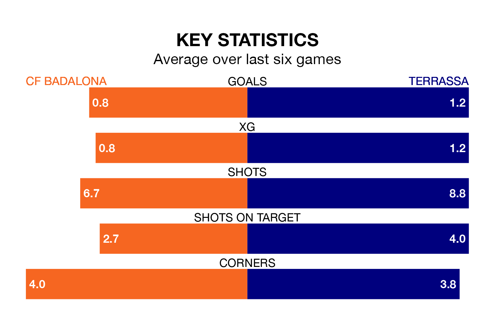

CF Badalona face Terrassa on Sunday seeking to protect their long unbeaten run in Segunda División RFEF Group 3.
Badalona are unbeaten in five, with one win and four draws, ahead of the 4pm kick-off.
They face a Terrassa team who have won two and drawn two over the same number of games.
With 19 goals in 17 games so far this season, Terrassa are scoring at below the league average rate with 1.1 goals per game. And they are conceding more than average, letting in 23 goals at a rate of 1.4 per game.
Badalona, meanwhile, are average scorers, with 1.2 goals per game. They have conceded 0.6 goals per game.
The hosts are fourth in the table after 17 games, of which they have won eight and drawn seven, earning 31 points.
The away side are 10 places behind Badalona in 14th, with four wins and seven draws putting them on 19 points.
In the last five years, Badalona and Terrassa have played each other on five occasions. Badalona won two of them, Terrassa one, and they drew twice.
On average, Badalona scored 1.4 goals and Terrassa 1.2 in those matches.
Their last meeting was on September 3, when Badalona won 4-1 away.
Badalona's last match was on January 7, a 1-0 win against La Nucía.
Terrassa beat Peña Deportiva 1-0 last time out, also on January 7.
Updated: 10:50, 10/01/24